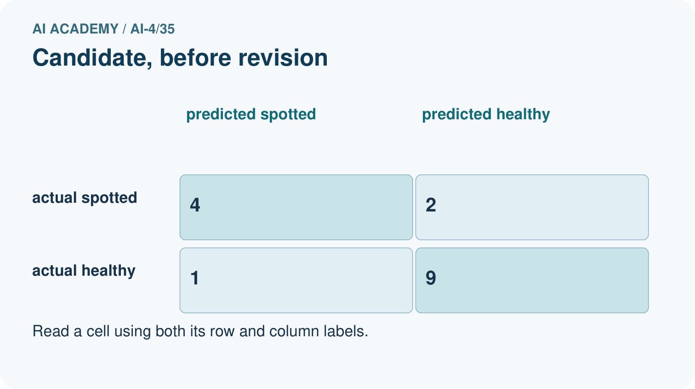
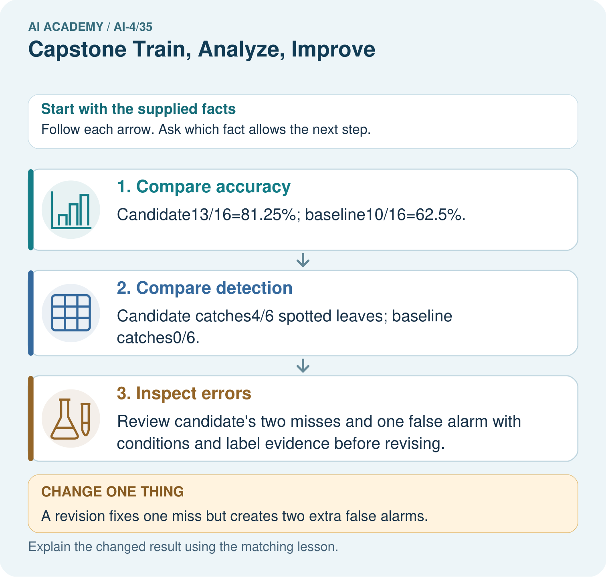

AI Academy · Level 4 · Grade 9 · Week 35 · Workbook
Capstone Train, Analyze, Improve
Learn to understand, design, build, test and explain AI systems responsibly.
Project: Responsible Plant Classifier
Workbook · 1 of 18
Recall and choose your starting point
Try the recall before opening notes. Then use a different colour or a labelled second line to correct your explanation.
Capstone Dataset and Baseline
Without opening the old lesson, explain one key idea from Capstone Dataset and Baseline. Give an example and a mistake that the idea helps you avoid.
Proxy Features and Fairness
Without opening the old lesson, explain one key idea from Proxy Features and Fairness. Give an example and a mistake that the idea helps you avoid.
Feature Engineering
Without opening the old lesson, explain one key idea from Feature Engineering. Give an example and a mistake that the idea helps you avoid.
Workbook · 2 of 18
Practise with fading help
Use W2: Audit a difference for Capstone evaluation and revision. Record the answer once; the lesson and workbook refer to the same attempt.
| Given inputs | Procedure I chose | Middle steps | Result and check |
|---|---|---|---|
Workbook · 3 of 18
Individual reasoning check
Use the worked case for Capstone evaluation and revision. Proposed explanation: “A final answer is enough”. Decide whether this explanation is supported. Point to the step or supplied fact that decides; explain your repair if needed.
Workbook · 4 of 18
Independent transfer case
Independent case: Apply independently
Frozen candidate[[6, 2],[1, 3]] and baseline[[8, 0],[4, 0]] on 12 cases. Compute candidate metrics and compare error types.
Attempt this case before feedback. Record any help. Earlier examples below are further practice; a case already practised with feedback cannot establish fresh transfer.
Workbook · 5 of 18
Your learning target
A new model reduces validation errors from 8 to 5 but the team also removed three hard cases. Can improvement be attributed to the model? Propose a repair to the experiment.
Workbook · 6 of 18
Solve the given case
Baseline validation accuracy70%; model80%; most remaining errors are dim images.
Plan improvement evidence.
Show your trace, calculation or evidence
Workbook · 7 of 18
Check a changed case
A revision raises overall validation accuracy from 80% to 84% but lowers dim-light accuracy from 60% to 40%. How should the improvement claim change?
My independent answer and reason
Week 35 Test and reflect
Workbook · 8 of 18
Design a revealing test
Create a changed input, boundary case or missing-information case. Write the expected answer or safe response before testing.
| Test record | My evidence |
|---|---|
| Changed input or condition | |
| Expected answer or fallback | |
| Observed result | |
| Why the result occurred |
Workbook · 9 of 18
Project checkpoint
Finalize the Plant Classifier experiment record, confusion matrix, subgroup table, model card, and honest remaining-limit statement.
The project change and evidence I will keep
Workbook · 10 of 18
Self check
I can explain the mechanism. I can show evidence. I can handle a changed case. I can name a limit. Mark each as not yet, with help or independently, and attach supporting work.
Teacher review ____________________ Next step ____________________
Workbook · 11 of 18
Transfer practice from the original programme
A new model reduces validation errors from 8 to 5 but the team also removed three hard cases. Can improvement be attributed to the model? Propose a repair to the experiment.
Record support used: none, hint or teacher explanation.
Workbook · 12 of 18
W1 Score the frozen test
Compute the worked candidate metrics and baseline accuracy.
Workbook · 13 of 18
W2 Audit a difference
What does the one-correct-case improvement establish?
Workbook · 14 of 18
W3 Label a revision
A threshold changes after test errors are read. Label its score on the same rows.
Workbook · 15 of 18
W4 Apply independently
Frozen candidate[[6, 2],[1, 3]] and baseline[[8, 0],[4, 0]] on 12 cases. Compute candidate metrics and compare error types.
Workbook · 16 of 18
W5 Update the card
What must remain visible when version 2 is proposed without a fresh test?
Workbook · 17 of 18
Feedback, return check and learning record
| Evidence | My record |
|---|---|
| Worked alone / hint / model | |
| First step I repaired and why | |
| New case checked later; date and result | |
| What I can now explain without notes | |
| One remaining question |
Revisit this idea with your teacher after a delay. Familiarity is different from explaining and using it on a changed case.
Workbook · 18 of 18
Pictorial case practice: Capstone Train, Analyze, Improve
Choose the next capstone revision from explicit false alarms and misses.
Positive=spotted. CandidateTP4, FN 2, FP 1, TN 9; baselineTP0, FN 6, FP 0, TN 10. Both evaluate the same16 cases.
All inputs and outcomes in this worked example are invented classroom data; no real model run is claimed.


Why is “the revision is better” incomplete? Point to the relevant step in the picture, then write the changed result and the rule or evidence that supports it.
Support used: alone / hint / worked example. This record is practice evidence.
Project connection: For your Responsible Plant Classifier, save the input, procedure, observed result and limitation of this check. Label this worked example as practice; use a different, previously unreviewed case when checking independent understanding.